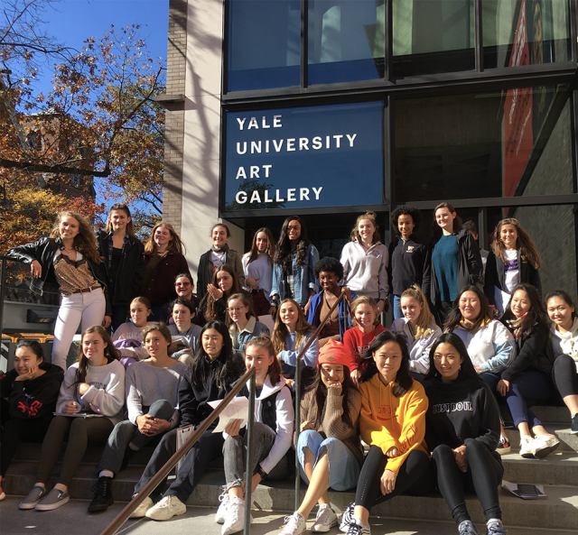
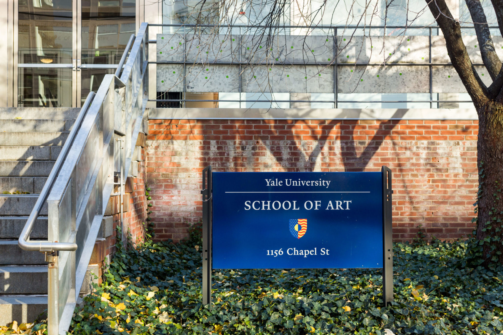
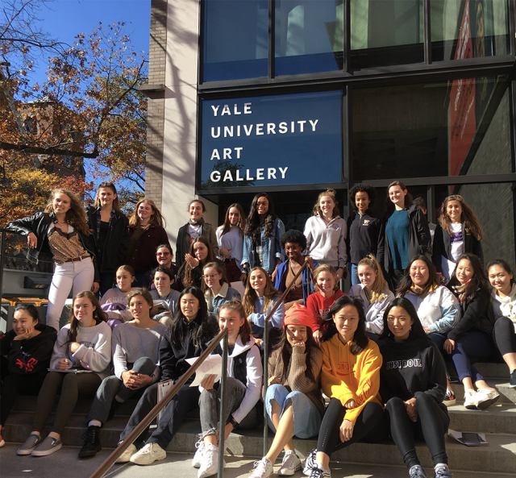
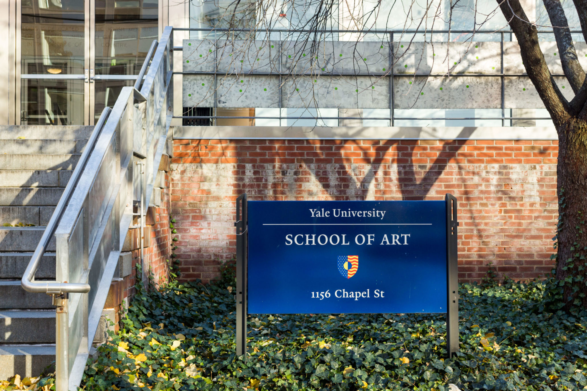

About the Website
This website exists as an ongoing collaborative experiment in digital publishing and information sharing. Because this website functions as a wiki, all members of the School of Art community—graduate students, faculty, staff, and alums—have the ability to add new content and edit most of the site’s existing content.
 



Upcoming Events
"First Breath Second Sight" — 2025 Photography MFA Thesis Exhibition
April 12–19, 2025
Panel Talk: Friday, April 18th, 6–8PM
📍 1156 Chapel Street
🕒 Apr 12th, 11:00 AM – Apr 19th, 4:00 PM EDT
MFA Crits in Sculpture
📍 36 Edgewood Ave., New Haven
🕒 12:00 PM – 3:30 PM EDT
Sounding Colors | Audio-Visual Piano Recital
📍 100 Wall Street, New Haven
🕒 7:30 PM – 9:00 PM EDT
Community Bulletin Board
Environmental Joy – The Yale Center for Environmental Justice is planning the Global Environmental Justice Conference.
We invite artists to submit work on the theme "Environmental Joy".
📧 Contact Julia Simon at julia.simon@yale.edu
Studio Space Available – The Yale Arts Apprenticeship Program is an initiative that connects Yale undergraduates, particularly those on financial aid, with professional arts practitioners of any discipline. As an option within Yale’s Summer Experience Award (SEA) funding model, the Arts Apprenticeship must fulfill the same basic requirements. Additional details, as well as those specific to the Arts Apprenticeship are included below.
📧 for more info x: ocs.yale.edu/channels/arts-apprenticeship
Faculty/Alumni: Post Your Art Apprenticeship/Internship – Looking for students to share studio space near Edgewood Ave.
📧 Contact Alex: alex.studio@yale.edu
From our friends at the Yale Center for Environmental Justice – The Yale Center for Environmental Justice is in the process of planning our fourth annual Global Environmental Justice Conference, with this year focusing on the theme of “Environmental Joy.
📧 Contact Alex: alex.studio@yale.edu
MAPPING PUBLIC ART IN NEW HAVEN – Hey everyone! I’ve been mapping public art in New Haven as part of my nonprofit project ArtAround and I’d love to invite you to join me, or just check it out and see what you think.
att Lindsey
Arts Apprenticeship Opportunities
The Yale Arts Apprenticeship Program connects undergraduates with professional arts practitioners. Opportunities must be at least 30 hours/week for 8 weeks and cannot be with for-profit organizations. More info at Yale OCS.
Newsletters
- News From New Haven A public monthly newsletter.
- Week at SoA – A weekly community-only events email.